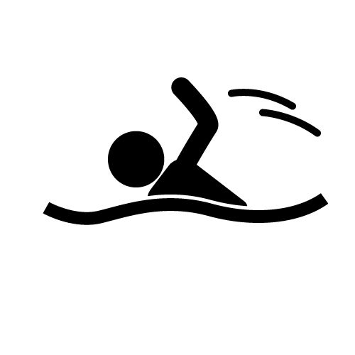
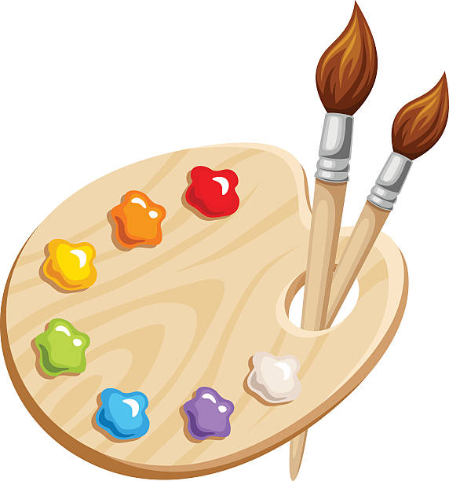

Michael Samonte
9th Grader | Lane Tech | Student
I am 15 years old, the youngest in my family, a family of five. My birthday is in September 21, 2009. I grew up Joyce Kilmer Elementary School, this was during Elementary. I do not remember much about it but I have made a lot of friends at this time. In middle school, I transferred to William E Dever Elementary school. I have made a few friends in that school. Now, I go to Lane Tech. I chose to be in Lane because both of my older siblings have also made it to Lane Tech. I am a huge fan of art and enjoy drawing and I hope that Lane Tech can make art my elective in my sophomore year.
I used to be extremely active and do outside activities, this past has gave me a lot of motivation to how I imagine my future or how I treat myself now. These gave me my hobbies, sports, and goals I want to set for myself.
Hobbies

Art, I like making art for myself or show to friends.
Videogames, I play in my freetime, usually when I am bored or want to do activites with friends.
Sports

Back then, I used to take a sports activities such as a swimming class. This is a long while ago, so in my freshman unit of swimming, I forgot what to do. I also used to take beginner basketball lessons. I remember a little such as dribbling and shooting.
Professions

My main goal is to be an artist and share it to a large audience. I am inspired by seeing friends from my old school draw things that many people enjoy and it is only at a young age. I am also inspired by the many art I like to watch myself such as museum trips or the cartoons and shows I watched growing up and its interesting stories.